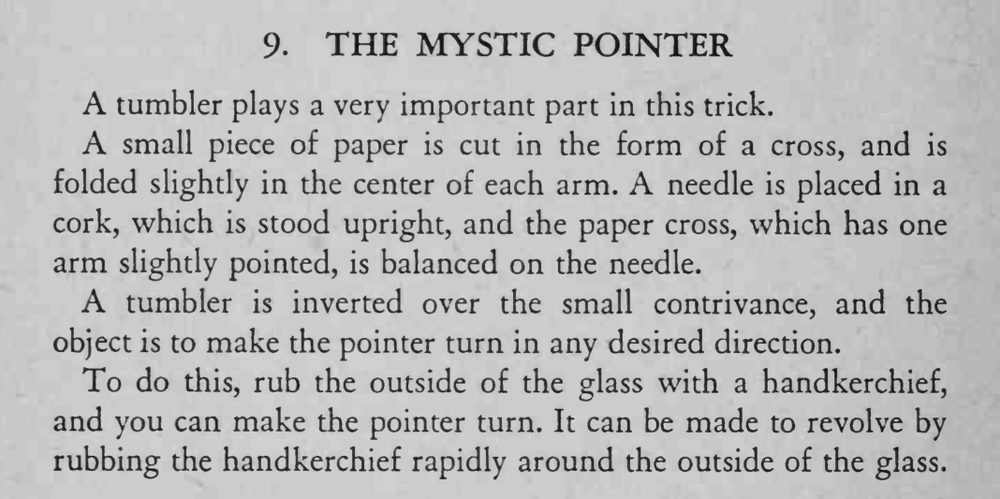

玻璃杯倒扣在一个小装置上，杯里的纸十字指针会随着魔术师的意思转动。
纸十字要平衡得能自由转动，摩擦要干脆，杯口别碰桌面。

tumbler plays a very important part in this trick. A small piece of paper is cut in the form of a cross, and is folded slightly in the center of each arm. needle is placed in a cork, which is stood upright, and the paper cross, which has one arm slightly pointed, is balanced on the needle. tumbler is inverted over the small contrivance, and the object is to make the pointer turn in any desired direction. To do this, rub the outside of the glass with a handkerchief, and you can make the pointer turn. It can be made to revolve by rubbing the handkerchief rapidly around the outside of the glass.